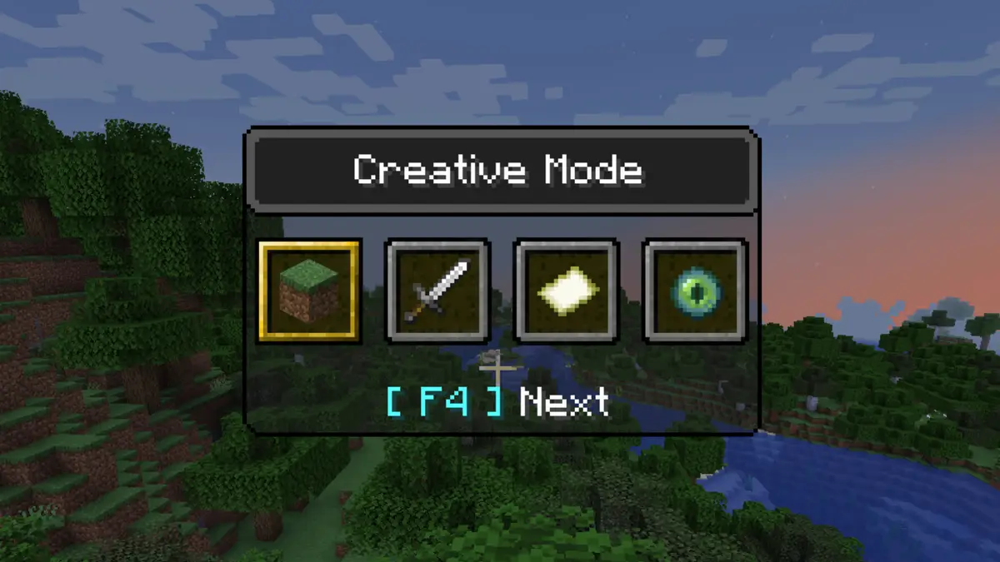

Minecraft has five game modes: Survival Mode, Creative Mode, Hardcore Mode, Spectator Mode, and Adventure Mode. The two most popular modes are Survival and Creative.
| Survival world is much more challenging for new players, but can also be very rewarding. In Survival Mode, gamers are dropped randomly into a world at dawn. They have 10-20 real-time minutes to gather resources, craft tools and items, assemble shelter, and find food to survive. When darkness falls, they also have to battle monsters and mobs. |
.png)
fun fact the image above is actually from my very own minecraft world!
| In Creative Mode, you don’t have to worry about getting hungry or hurt in this mode. Since you don’t have to worry about hunger, health, or enemies you can build massive structures and play in a more relaxed environment. You aren’t limited to walking and running either. Flying is an option in Creative Mode. You also have access to every block, tool, weapon, potion, book, and food item available in the game. This mode is great for exploring the different ways of building in Minecraft. |
| Hardcore mode is not for the faint of heart. It’s an entirely different game mode with it’s own set of rules. Once you’ve entered a hardcore game you cannot change the difficulty level. The game is set to an extreme difficulty level. Normally if the player dies from hunger, a fall, or deadly mobs they can respawn back where they started. In Hardcore Mode it’s game over. If you’re reading this guide you might not be ready for hardcore mode just yet. |
| In Spectator Mode, players can only explore the world, but cannot interact with it. Because players can’t interact with blocks at all in spectator mode they can fly right through them. It’s a great way to see a world or project you’ve been working on from a whole new perspective. |
| Adventure Mode limits the tools players can use to do certain tasks. Our favorite use of adventure mode at Connected Camps is to make stories and experiences, designing our own levels and worlds for others to play. |